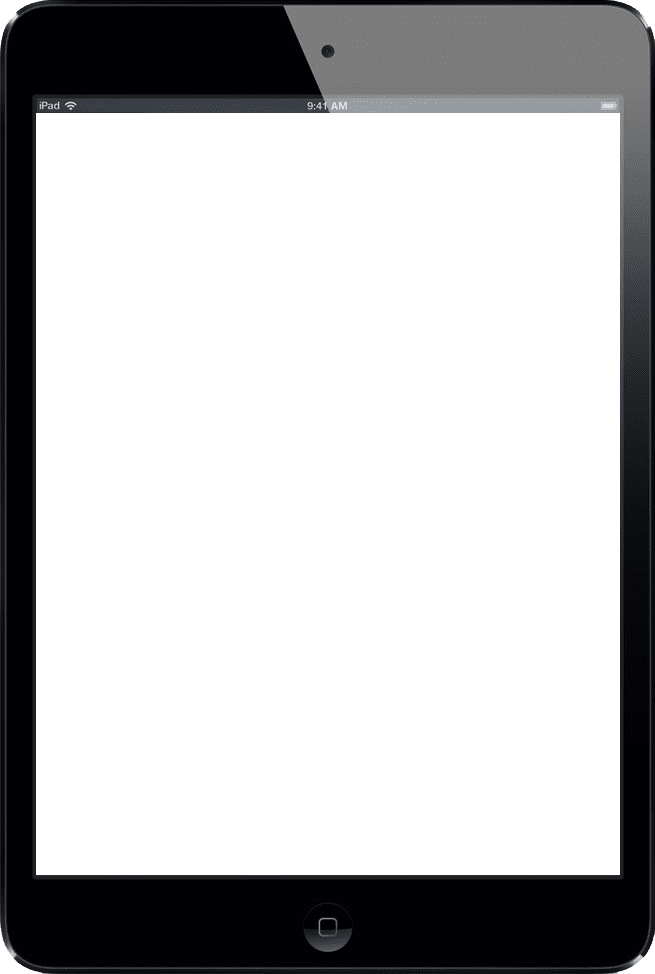

<section class='portfolio-work__opened'>

  <app-section-title [title]="'portfolio.html.short' | translate"></app-section-title>

  <p class="section-description">{{ 'descriptions.portfolio' | translate }}</p>

    <div class='portfolio-work__description appear'>
        
        <p class='portfolio-work__short-description'></p>
        <p class='portfolio-work__full-description'></p>
        <p class="portfolio-work print-version"></p>
    </div>

    <div
      class="work-in-frame__device-wrapper"
      [ngClass]="'work-in-frame__device-wrapper_' + currentMode.name"
      ref="">

        

        <iframe src="https://demidenko-denys.pp.ua"
                (load)="onIframeLoaded($event)"
                class="work-in-frame work-in-frame_waitingggg"
                [ngClass]="'work-in-frame_' + currentMode.name"
                scale-iframe
                [scale]="currentMode.scale"
                [width]="currentMode.width"
                [height]="currentMode.height">
        </iframe>

        <div class='work-in-frame__loading-icon'></div>

        <!-- <Link to="/" onClick={ this.closeWork } class="work-in-frame__close-cross" data-tip="вернуться к списку работ"></Link>
        <Link to="/" onClick={ this.closeWork } class="work-in-frame__close-mobile-button"  data-tip="вернуться к списку работ"></Link> -->

    </div>

</section>